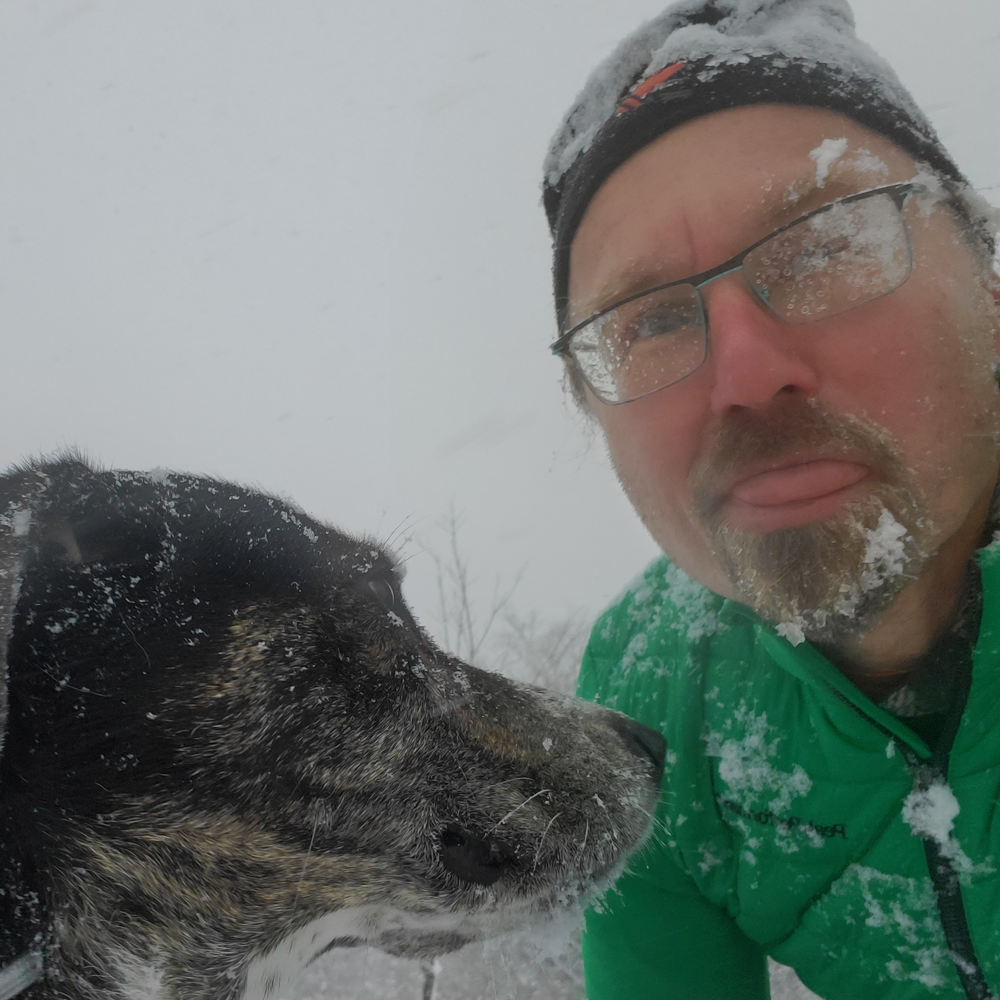

Dutch Village Runners
Dutch Village Runners
Dutch Village Runners
Dutch Village Runners
It's spring! Let's run!
Thursdays 7pm
~ 1/2 hour run
Starting Thursday, April 11, 2024.
Meet at Freeman's on Dutch Village Rd at 7pm.
3671 Dutch Village Road, Halifax
902-445-5256
Everyone is welcome:
Values:

About me: Hi, I'm Johann. I've lived just off Dutch Village Road
since 2009, and I've been running since 2016. When my dad turned 70,
he decided to start running. He got me hooked at age 40.
I've run with our sister & brother groups, the
North End Runners
and the
BLT Runners,
as well as at the wonderful
parkrun,
and I love all of them.
Today Fairview has lots of runners, and more who might fall in love
with running when they try it. So let's get together for fun runs
and socializing!